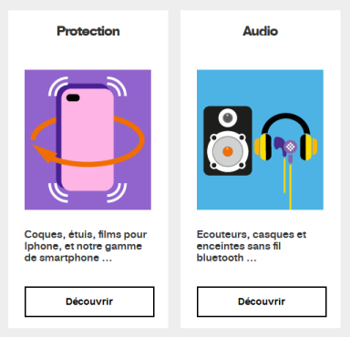

Web designer - Mise en page
S’assurer que la mise en page soit adaptée à l’utilisateur.
Agrandissement de texte et adaptation à la taille d'affichage #
Cible : tout le monde et en particulier les personnes déficientes visuelles, en mobilité et seniors.
Quand : lors de la conception graphique et principalement lors du développement.
Description :
La taille du texte doit pouvoir être multipliée par 2 (zoom du texte à 200% depuis les réglages du navigateur). À ce niveau de zoom, la présentation de la page peut être altérée, mais l’information doit rester lisible (pas de texte tronqué, ni superposé).
De plus, il faut s'assurer de faire du contenu web adaptatif (responsive web design) donc prévoir les différents affichages selon des largeurs type d'écran (points de rupture) en amont du développement.
Par ailleurs, certains choix de design peuvent ou non faciliter la mise en place de ce critère lors du développement, il est donc important d’y réfléchir dès le départ.
Exemple :
La capture ci-dessous montre une page avec un zoom à 100%.

Exemple valide :
Avec zoom du texte à 200%.

Exemple non-valide :
Avec zoom du texte à 200%. Ici la hauteur de l’élément contenant le texte n’a pas été rendue variable en fonction de la taille des caractères.

Permettre d'aérer le texte #
Cible : tout le monde, et en particulier les personnes déficientes visuelles et dyslexiques.
Quand : lors de la conception et du développement.
Même si c'est pendant la phase de développement que l'on va s'assurer de la validité de ce critère, il est intéressant dès la phase de conception de réfléchir à la hauteur des lignes et à l'espacement des paragraphes et du texte. Il est couramment admis qu'une hauteur de ligne (line-height) de 1.5 permet d'obtenir une bonne lisibilité du texte, exemple article en anglais intitulé : Why you shoud go big with line spacing.
Description :
Si l'utilisateur applique les réglages suivants, le texte doit rester lisible (pas de contenu tronqué, superposé):
- La hauteur des lignes doit pouvoir être ajustée à 1.5 fois minimum la taille de la police de caractères.
- L'espace situé entre deux paragraphes doit pouvoir être ajusté à 2 fois minimum la taille de la police de caractères.
- L'espacement entre les lettres doit pouvoir être ajusté à 0.12 fois minimum la taille de la police de caractères.
- L'espacement entre les mots doit pouvoir être ajusté à 0.16 fois minimum la taille de la police de caractères.
Pour info les critères cités précédemment reviennent à appliquer les styles CSS suivants au niveau de code :
* {
line-height: 1.5!important;
letter-spacing:.12em!important;
word-spacing: .16em !important;
}
p {
margin-bottom: 2em!important;
}
Bookmarklet:
Pour faciliter le test, vous pouvez utiliser le bookmarklet suivant qui appliquera ces styles à la page courante de votre navigateur (bookmarklet à glisser dans votre barre de favoris) : Espacement du texte
Identifier et conserver la cohérence des regroupements et des différentes régions de la page #
Cible : tout le monde et en particulier les personnes déficientes visuelles, cognitives ou ayant des troubles de l’attention.
Quand : lors de la conception.
Description :
Fournir des moyens d’identifier et de distinguer visuellement les différentes parties de la page et assurer la cohérence de ces régions ou regroupements dans toutes les pages.
À vérifier :
- S'assurer que les liens dans le corps du texte sont facilement identifiables visuellement par un autre moyen que la couleur (souligné, gras…) par rapport au reste du texte.
- S’assurer que les mécanismes de navigation sont toujours situés au même endroit dans un ensemble de page.
- S’assurer que les composants et les regroupements qui ont la même fonction, sont identifiés (visuellement) de la même façon et, dans la mesure du possible, respecter l’apparence classique de ces éléments pour ne pas perturber l’utilisateur habitué à un aspect spécifique de ceux-ci (par exemple, les liens sont généralement soulignés…).
- S’assurer que les zones de la page sont clairement délimitées (bordures, filets, contraste suffisant…) ou qu’il y a un moyen de distinguer visuellement les groupes (sous-menu, liste déroulante…) ainsi que les différentes régions de la page.
Exemple valide :

Ici, l’info bulle (tooltip) est délimitée par une bordure bien visible et suffisamment contrastée, permettant de bien identifier son contenu.
Exemple non-valide :
 {:class="lol"}
{:class="lol"}
Il est très difficile d’associer les thèmes (« par région », « par genre »…) et les sous-thèmes en colonnes, d’autant plus que les filets horizontaux sont trop peu contrastés.
Définir des zones sensibles de taille suffisante #
Cible : tout le monde en particulier les personnes souffrant de handicap moteur ou visuel et en mobilité.
Quand : lors de la conception et lors du développement.
Description :
Pour les utilisateurs de périphériques tactiles (smartphones, tablettes...), les zones tactiles doivent avoir une taille suffisante pour permettre une navigation aisée. Par ailleurs celles-ci doivent être également suffisamment espacées les unes des autres.
A vérifier
- La taille des zones tactiles doit être de 9mm minimum de largeur et de hauteur.
- L'espacement entre les zones tactiles ne doit pas être inférieur à 2mm.